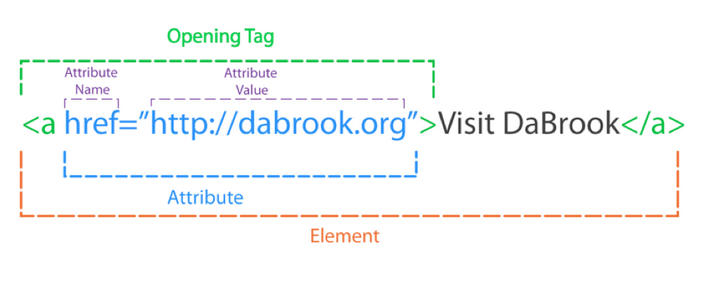

HTML
Die Hypertext Markup Language (HTML), ist eine textbasierte Auszeichnungssprache
zur Strukturierung digitaler Dokumente
wie Texte mit Hyperlinks, Bildern und anderen Inhalten.
HTML-Dokumente sind die Grundlage des World Wide Web und werden von Webbrowsern dargestellt.
Neben den vom Browser angezeigten Inhalten können HTML-Dateien zusätzliche Angaben
in Form von Metainformationen enthalten, z.B. über die im Text verwendeten Sprachen, den Autor
oder den zusammengefassten Inhalt des Textes.
HTML wird vom World Wide Web Consortium (W3C) und der Web Hypertext Application Technology Working
Group (WHATWG) weiterentwickelt. Die aktuelle Version ist seit dem 14. Dezember 2017 HTML 5.2,
die bereits von vielen aktuellen Webbrowsern und anderen Layout-Engines untersützt wird.
Auch die die Extensible Hypertext Markup Language (XHTML) wird durch HTML5 ersetzt.
Elemente
HTML besteht aus Elementen und Attributen. Ein solches Element besteht aus Tags. Genauer besteht es aus einem Start-Tag,
Element-Inhalt und einem End-Tag. In einem Start-tag können dann Attribute sein. Ein Attribut ist aus
einem Namen und einem Wert gebildet. Um eine simple Webseite zu erstellen, benötigt man nur einen Editor und Webbrowser.
So sieht es aus:

Elemente sind wie Behälter. Sie teilen Ihnen etwas über die Informationen zwischen ihrem öffnenden und schliessenden Tag mit.
Attribute geben zusätzliche Informationen über den Inhalt eines Elements. Sie stehen im öffnenden Tag des Elements und bestehen aus zwei Teilen,
einem Namen und einem Wert, die durch ein Gleichheitszeichen getrennt sind.
Der Attributname sagt aus, welche Art von Zusatzinformationen über den Inhalt des Elements Sie damit angeben. Es sollte in Kleinbuchstaben geschrieben werden.
Der Wert ist die Information oder Einstellung des Attributs und sollte in doppelten Anführungszeichen stehen. Die verschiedenen Attribute können jeweils
unterschiedliche Arten von Werten aufweisen.
Die meisten Attribute können nur jeweils bei einem bestimmten Element eingesetzt werden. Einige wenige können jedoch auch in beliebigen Elementen stehen.
Die meisten Attributwerte sind entweder vordefiniert oder folgen einem festgelegten Format.
body
Das body-Element ist der Hauptkörper einer Webseite. Alles was in diesem Element steht, wird im Hauptfenster des Browsers angezeigt.
head
Vor dem body-Element steht oft das Element "head" mit Informationen über die Seite. Innerhalb eines head-Elements finden Sie gewöhnlich ein title-Element.
title
Der Inhalt des title-Elements wird entweder ganz oben im Browser angezeigt, oberhalb der Stelle, an der Sie gewöhnlich den URL der gewünschten Seite eingeben,
oder auf dem Reiter der Registerkarte für die Seite.
Überschriften
HTML besitzt offiziell sechs Ebenen für Überschriften. Diese gehen von h1 bis h6. Inoffiziell kann man unendlich viele
Überschriften in HTML haben. h1 wird für Hauptüberschriften benutzt und h2 für Zwischenüberschriften.
Bei den weiteren h wird die Schriftgrösse kleiner. Die grösse der Schrift kann von Browser zu Browser variieren.
Man kann auch selbst die Grösse der Schrift und die Schriftart ändern.
Absätze
Absätze können mit dem Element "p" erstellt werden. Dieses besitzt ein schliessendes und öffnendes Tag.
Standardmässig zeigt ein Browser den Absatzanfang in einer neuen Zeile an und lässt etwas Platz zu den nachfolgenden Absätzen.
Fett & Kursiv
b
Wenn Sie Wörter mit den "b" Tags umgeben erscheinen sie in Fettschrift.
Das Element "b" kann auch für einen Textabschnitt stehen, der grafisch auf andere Weise ausgezeichnet werden sollt.
i
Wörter, die mit "i" umgeben sind, erscheinen in Kursivschrift.
Exponenten & Indizes
sup
Das Element "sup" umschliess Zeichen, die hochgestellt werden sollen.
sub
Das Element "sub" umschliesst Zeichen, die tiefgestellt werden sollen.
Zeilenumbrüche & horizontale Linien
br/
Wenn man mitten in einem Absatz einen Umbruch will, kann man das Tag "br/" benutzen.
hr/
Um zwei Themen voneinander abzugrenzen, können Sie mit dem Tag "hr/" eine horizontale Linie zwischen den Abschnitten einfügen.
Es gibt einige wenige Elemente wie "hr/", bei denen nichts zwischen dem öffnenden und dem schliessenden Element steht. Dies sind sogenannte
leere Elemente.
Ein leeres Element hat gewöhnlich nur ein Tag. Vor der schliessenden spitzen der Klammer stehen ein Leerzeichen und ein Schrägstrich.
Verstärkung & Hervorhebung
strong
Das Element "strong" gibt an, dass der Inhalt von wichtiger Bedeutung ist. Normalerweise zeigen Browser die Inhalte von "strong" Elementen fett an.
em
Das Element "em" deutet eine Hervorherbung an, die die Bedeutung eines Satzes leicht verändern kann.
Standardmässig zeigen Browser die Inhalte von em-Elementen kursiv an.
Zitate
blockquote
"blockquote" wird für längere Zitate verwendet, die einen ganzen Absatz einnehmen. Das Element "p" wird Innerhalb
von "blockquote" benutzt.
q
Wird für kürzere Zitate innerhalb eines Absatzes verwendet. Browser sollen q-Elemente mit Anführungszeichen umgeben, dies macht
Inter Explorer nicht, weshalb "q" gemieden wird.
In beiden Elementen kann das Attribut "cite" verwendet werden, um die Quelle des Zitats anzugeben. Der Wert sollte ein URL mit weiteren Informationen über die Quelle sein.
Listen
In HTML stehen drei verschiedene Arten von Listen zur Verfügung.
- Geordnete Listen (ol)
- In geordneten Listen sind die Einträge durchnummeriert.
- Ungeordnete Listen (ul)
- Die Einträge von ungeordneten Listen beginnen mit einem Aufzählungssymbol.
- Definitionslisten (dl)
- Definitionslisten bestehen aus Begriffen und ihren Definitionen.
Für die oberen Beiden Listen werden li-Elemente benutzt. Für "dl" wird "dt" und "dd" verwendet.
"dt" gibt den zu definierenden Term an und in "dd" ist die Definition.
Es gibt auch noch die Möglichkeit in einer Liste eine Liste zu erstellen. Dies nennt man dan verschachtelte
Liste. Browser zeigen verschachtelte Listen weiter eingerückt an als die übergeordnete Liste. Bei verschachtelten ungeordneten Listen
ändert der Browser gewöhnlich auch das Aufzählungssymbol.
Links
Links sind das Schlüsselmerkmal des Webs, denn damit ist es möglich, sich von einer Webseite zur anderen zu bewegen.
Standardmässig werden Ihnen folgende Arten von Links begegnen:
- Link von einer Webseite zu einer anderen
- Links von einer Seite zu einer anderen auf derselben Webseite
- Links von einem Teil einer Webseite zu einem anderen Teil derselben Seite
- Links, die in einem neuen Browserfenster geöffnet werden
- Links, die Ihr E-Mail-Programm starten und eine neue E-Mail-Nachricht mit einer Adresse versehen
Links werden mit dem Element "a" erstellt. Die Benutzer können auf alles klicken, was sich zwischen dem öffnenden Tag und dem schliessenden Tag befindet.
Zu welcher Seite der Link führt, geben Sie im Attribut href an.
Der Text zwischen den Tags ist der Linktext. Er sollte nach Möglichkeit angeben, wohin die Benutzer gelangen, wenn sie drauf klicken.
Absolute URLs
URL steht für Uniform Resource Locator. Jede Webseite verfügt über ihren eigenen URL. Dabei handelt es sich um die Webadressse, die Sie im Browser eingeben, wenn Sie diese Seite
besuchen möchten. Ein absoluter URL beginnt mit dem Domänennamen der Webseite. Darauf kann der Pfad zu einer einzelnen Seite folgen. Ist keine Seite angegeben,
wird die Startseite der Webseite angezeigt.
Relative URLs
Für Links zu anderen Seiten derselben Webseite können Sie relative URLs verwenden. Das ist eine Art Kurzversion eines
absoluten URLs, da der Domänenname nicht angegeben werden muss.
Relative URLs sind hilfreich, wenn Sie eine Webseite auf Ihrem Computer erstellen, da Sie dadurch Links zwischen den Seiten aufbauen können, ohne
einen Domänennamen einzurichten oder für das Hosting zu sorgen.
Bei Links zu Seiten auf Ihrer eigenen Webseite müssen Sie den Domänennamen nicht angeben, sondern können relative URLs verwenden. Dabei handelt es sich
um eine kürzere Möglichkeit, um dem Browser mitzuteilen, wo sich eine Seite relativ zur aktuellen Seite befindet.
Da Sie den Domänennamen nicht in jedem Link wiederholen müssen, lassen sich diese Verknüpfungen auch einfach schreiben.
Befinden sich alle Dateien Ihrer Webseite in einem einzigen Ordner, geben Sie einfach den Dateinamen der Seite an.
Ist die Webseite dagegen in mehrere Ordner unterteilt, müssen Sie dem Browser mitteilen, wie er von der aktuellen Seite zu derjenigen gelangt, die verlinkt ist.
Verzeichnisstruktur
Bei grösseren Webseites ist es sinnvoll, den Code zu gliedern, indem Sie die Seiten jeweils in Ordner für die Abschnitte stellen, zu denen sie gehören. Die Ordner
von Websites werden auch als Verzeichnisse bezeichnet.
Struktur
Der Ordner der obersten Ebene ist der sogenannte Wurzelordner. Der Wurzelordner enthält alle anderen Dateien und Ordner der Webseite.
Beziehungen
Die Beziehungen zwischen den Dateien und Ordnern einer Webseite werden mit Begriffen bezeichnet, die aus Familienstammbäumen bekannt sind
Startseiten
Die Hauptstartseite einer in HTML geschriebenen Webseite heisst "index.html".
Wenn kein Dateiname angegeben ist, geben Webserver gewöhnloch die Datei "index.html" zurück.
Jede Seite und jedes Bild einer Webseite hat einen URL. Er besteht aus dem Domänennamen, gefolgt von dem Pfad zu der Webseite.
URLs verwenden Sie, wenn Sie Links zu anderen Webseiten erstellen oder wenn Sie Bilder auf Ihrer eigenen Webseite einfügen.
E-Mail-Links
mailto:
Um einen Link zu erstellen, der das E-Mail-Programm des Benutzers startet und eine neue nachricht mit einer bestimmten Adresse versieht, verwenden Sie ebenfalls das Element "a",
geben im Attribut "href" als Wert jedoch "mailto:" gefolgt von der gewünschten E-Mail-Adresse ein.
Das sieht dann so aus:
"a href="mailto:manuel@example.ch">E-Mail an Manuel(Schlusstag)
Links in einem neuen Fenster öffnen mit "target
Wenn der Link die Zielseite in einem neuen Fenster öffnen soll, können Sie im öffnenden a-Tag das Attribut "target" verwenden. Als Wert verwenden Sie "_blank".
Links werden hauptsächlich dann in einem neuen Fenster geöffnet, wenn sie zu einer anderen Webseite führen. Der Autor der Webseite hofft in einem solchen Fall,
dass seine Besucher zu dem Fenster mit seiner eigenen Webseite zurückkehren, nachdem Sie sich den Inhalt der anderen angesehen haben.
Im Allgemeinen sollten Sie darauf verzichten, Links in neuen Fenstern zu öffnen. Wenn Sie es aber tun, sollten Sie die Benutzer darüber informieren, bevor sie auf den Link klicken.
Bilder
Wenn Sie eine Webseite neu erstellen, ist es bewährte Praxis, einen für alle verwendeten Bilder anzulegen.
Bilder hinzufügen
img
Um Bilder zu einer Seite hinzuzufügen verwenden Sie das Element "img". Dies ist ein leeres Element. Die folgenden beiden Attribute müssen enthalten sein:
src
Dieses Attribut sagt dem Browser, wo die Bilddatei zu finden ist. Der Wert ist gewöhnlich ein relativer URL, der auf ein Bild auf Ihrer eigenen Webseite zeigt.
alt
Dieses Attribut bietet eine Beschreibung des Bildes in Textform für den Fall, dass das Bild nicht zu sehen sein sollte.
title
Sie können im Element "img" auch das Attribut "title" verwenden, zm zusätzliche Informationen über das Bild anzugeben. Die meisten Browser zeigen den Inhalt dieses Attributs in einem kleinen
Informationsfeld an, wenn der Besucher mit dem Mauszeiger über das Bild fährt.
Höhe und Breite von Bildern
Häufig werden in img-Elementen noch zwei weitere Attribute verwendet, die die Grösse angeben:
height
Gibt die Höhe des Bildes in Pixeln an. Kann aber auch ein em-Wert sein oder %.
width
Gibt die Breite des Bildes an.
Es dauert meistens länger, die Bilder zu laden, als den HTML-Code, der den Rest der Seite ausmacht. Daher ist es sinnvoll, die Bildgrösse anzugeben, sodass der Browser den Rest der Seite schon einaml darstellen
und dabei ausreichend Platz für das Bild lassen kann, das noch geladen wird.
Die Grösse von Bildern wird immer häufiger mit CSS angegeben.
Bildformate
JPEG
Wenn ein Bild viele verschiedene Farben enthält, sollten Sie das Format JPEG verwenden. Fotos mit Schneelandschaften oder bewölktem Himmel wirken zwar so, als enthielten sie grosse Flächen aus derselben Farbe
, aber in Wirklichkeit besteht das Bild aus vielen verschiedenen Farben mit feinen unterschiedlichen Nuancen.
GIF/PNG
Verwenden Sie die Formate GIF oder PNG für Bilder mit wenigen Farben oder grossen einfarbigen Flächen.
Wenn ein Bildbereich durchgängig mit genau derselben Farbe ausgefüllt ist, spricht man von flachen Farben. Das ist häufig in Logos, Zeichnungen und Diagrammen der Fall.
Fotos von Schnee, von Gras oder vom Himmel weisen jedoch keine flachen Farben auf, sondern viele verschiedene Nuancen einer Farbe, weshalb die Formate GIF und PNG dafür nicht so gut geeignet sind.
Bildunterschriften
figure
Bilder weisen oft eine Unterschrift auf. In HTML5 gibt es das neue Element "figure", das ein Bild und seine Unterschrift einschliess, sodass sie zusammenhängen.
Wenn sich mehrere Bilder dieselbe Unterschrift teilen, können in einem figure-Element auch mehrere Bilder stehen.
figcaption
Das Element "figcaption" wurde in HTML5 hinzugefügt, um Bilder mit Untreschriften zu versehen.
Bevor diese Elemente zur Verfügung gestellt wurden, gab es keine Möglichkeit, um ein img-Element mit seiner Bildunterschrift zu verknüpfen.
Tabellen
Es gibt verschiedene Arten von Informationen, die in einem Raster oder einer Tabelle dargestellt werden müssen.
Dafür hat HTML auch einige Funktionen.
Grundlegende Tabellenstruktur
table
Tabellen werden mit dem Element "table" erstellt. Die Inhalte der Tabelle werden Zeile für Zeile geschrieben.
tr
Den Beginn einer Zeile markieren Sie jeweils mit dem öffnenden tr-Tag (tr=table row). Darauf folgt jeweil ein td-Element für jede Zelle in der Zeile.
Am Ende der Zeile geben Sie das schliessende tr-Tag an.
td
Die einzelnen Zellen einer Tabelle werden durch td-Elemente (td=Tabellendaten) dargestellt. Am Ende jeder Zelle steht jeweils ein schliessendes td-Tag.
Tabellenüberschriften
Das Element "th" (table heading) wird ebenso verwendet wie "td", steht aber für die Überschrift einer Spalte oder Zeile.
Hat eine Zelle keinen Inhalt, müssen Sie trotzdem das Element "td" oder "th" verwenden, um das Vorhandensein der leeren Zelle zu kennzeichnen, da die Tabelle ansonsten
falsch dargestellt wird.
Überschriften, die Sie mit "th" hinzufügen, sind hilfreich für Personen, die Screenreader einsetzen. Ausserdem können Suchmaschinen Ihre Seiten dann besser indizieren, und Sie können das Erscheinungbild der Tabellen
dann besser beeinflussen, wenn Sie anfangen mit CSS zu arbeiten.
Mit dem Attribut "scope" von "th" geben Sie an, ob die Überschrift für eine Spalte oder für eine Zeile gilt. Möglich sind die Werte "row" für Zeilen- und "col" für Spaltenüberschriften.
Browser zeigen den Inhalt von th-Elementen gewöhnlich fett und in der Zelle zentriert an.
Spalten zusammenfassen
Mit dem "colspan" für die Elemente "th" und "td" können Sie angeben, über wie viele Spalten sich eine Zelle erstecken soll. Umgekehrt geht dies auch mit Zeilen. Dafür ist es das Attribut "rowspan".
Formulare
Mit HTML-Formularen steht Ihnen eine Reihe von Elementen zur Verfügung, um Daten von den Benutzern abzufragen.
Funktionsweise Formulare
Der Benutzer füllt das Formular aus und klickt auf eine Schaltfläche, um die Informationen an einen Server zu übertragen.
- Die Namen der einzelnen Steuerelemente zusammen mit den vom Benutzer eigegebenen oder ausgewählten Werten werden an den Server gesendet.
- Der Server verarbeitet die Informationen mit einer Programmiersprache wie PHP, C#, VB.net oder Java. Unter Umständen werden die Informationen auch in einer Datenbank gespeichert.
- Der Server erstellt auf der Grundlage der Empfangenen Informationen eine neue Seite, die er an den Browser zurücksendet.
Ein Formular kann mehrere Steuerelemente enthalten, die jeweils andere Informationen erfassen. Der Server muss wissen, welche Eingabedaten zu welchem Steuerelement gehören.
Aufbau von Formularen
form
Formularsteuerelemente stehen in einem form-Element. Es muss über das Attribut "action" verfügen und hat gewöhnlich auch die Attribute "method" und "id".
action
Jedes form-Element muss das Attribut "action" aufweisen. Sein Wert ist der URL der Seite auf dem Server, der beim Einreichen des Formulars die Informationen empfängt.
method
Formulare können mit zwei verschiedenen Methoden gesendet werden: "get" und "post".
Bei "get" werden die Werte aus dem Formular an das Ende des URLs angehängt, der im Attribut "action" angegeben ist. Diese Methode eignet sich ideal für:
- Kurze Formulare
- Abrufen von Daten vom Webserver
Bei der Methode "post" werden die Werte in sogenannten HTTP-Headern gesendet. Verwenden Sie "post" im Allgemeinen bei Formularen der folgenden Art:
- Formulare, in denen Benutzer Dateien hochladen können
- Lange Formulare
- Formulare mit sensiblen Daten
- Formulare, die Informationen zu einer Datenbank hinzufügen oder daraus entfernen
Wird die Methode nicht angegeben, so werden die Formulardaten mit "get" gesendet.
id
Das Attribut "id" wird verwendet, um das Formular eindeutig von anderen Elementen auf der Seite zu unterscheiden.
input
Mit dem Element "input" werden verschiedene Formularsteuerelemente erstellt, deren Art durch den Wert des Attributs "type" bestimmt wird.
Hat das Attribut "type" den Wert "text" wird ein einzeiliges Texteingabefeld erzeugt.
name
Wenn Benutzer Informationen in ein Formular eingeben, muss der Server wissen, zu welchem Formularsteuerelement welche Daten gehören. Jedes Formularsteuerelement braucht daher
das Attribut "name", dessen WErt das Steuerelement bezeichnet und zusammen mit den eingegebenen Informationen an den Server gesendet wird.
maxlength
Mit dem Attribut "maxlength" geben Sie an, wie viele Zeichen maximal in ein Feld eingetragen werden dürfen, bei einer Jahreszahl könnte das z.B. 4 sein.
Passworteingabe
type="password"
Hat das Attribut "type" den Wert "password", wird ein Textfeld erstellt, das sich wie ein einzeiliges Texteingabefeld verhält, die eingegebenen Zeichen aber nicht anzeigt.
Wenn jemand also dem Benutzer bei der Registrierung über die Schulte blickt, kann er das Passwort nicht lesen.
name
Das Attribut "name" bezeichnet das Passwortfeld und wird zusammen mit dem eingegebenen Passwort an den Server gesandt.
Texteingabe (Mehrzeilig)
textarea
Mit dem Element "textarea" erstellen Sie ein mehrzeiliges Texteingabefeld. Anders als die anderen Eingabeelemente ist ein solcher Textbereich nicht solcher und muss daher über ein öffnendes und ein schliessendes Tag verfügen.
Text, der zwischen den Tags, wird beim Laden der Seite in dem Textfeld angezeigt.
Löscht der Benutzer diesen vorgegebenen Text nicht, wird er zusammen mit der eingegebenen Nachricht an den Server gesendet.
Wenn Sie ein neues Formular erstellen, sollten Sie Breite und Höhe von "textarea" mit CSS festlegen.
Radio-Buttons
input
type="radio"
Radio-Buttons erlauben es. genau eine von mehreren Optionen auszuwählen.
name
Das Attribut "name" wird zusammen mit dem Wert der vom BNenutzer ausgewählten Option an den Server gesendet. Wenn Sie den Benutzern eine Frage stellen und mehrere Antworten in Form von Radio-Buttons
anbieten, muss das Attribut "name" für alle möglichen Atworten zu dieser Frage denselben Wert aufweisen.
value
Das Attribut "value" enthält den Wert, der für die ausgewählte Option an den Server gesendet wird. Die Werte der einzelnen Schalter in einer Gruppe müssen eindeutig sein.
checked
Mit dem Attribut "checked" können Sie angeben, welche Option beim Laden der Seite vorausgewählt sein soll. Der Wert dieses Attributs lautet "checked". In einer
Gruppe von Radio-Buttons kann höchstens einer dieses Attribut aufweisen.
type="checkbox"
Bei Checkboxen können Die Benutzer zur Beantwortung einer Frage mehrere Optionen auswählen.
name
Das Attribut "name" wird zusammen mit den Werten der vom Benutzer ausgewählten Optionen an den Server gesendet. Wenn Sie den Benutzern eine Frage stellen und mehrere Antworten in Form von Checkboxen anbieten, muss das Attribut "name"
für alle möglichen Antworten zu dieser Frage denselben Wert aufweisen.
value
Das Attribut "value" enthält den Wert, der bei der Auswahl der Checkbox an den Server gesendet wird.
checked
Das Attribut "checked" gibt an, dass die Checkbox beim Laden der Seite vorausgewählt sein soll. Wenn sie dieses Attribut verwenden, geben Sie ihm den Wert "checked".
Dropdownlisten
select
In einer Dropdownliste können die Benutzer eine Option aus einer herauskappbaren Liste auswählen. Dropdownlisten werden mit dem Element "select" erstellt.
Es muss mindestens zwei option-Elemente enthalten. Auch hier kann wieder das Attribut "name" verwendet werden.
option